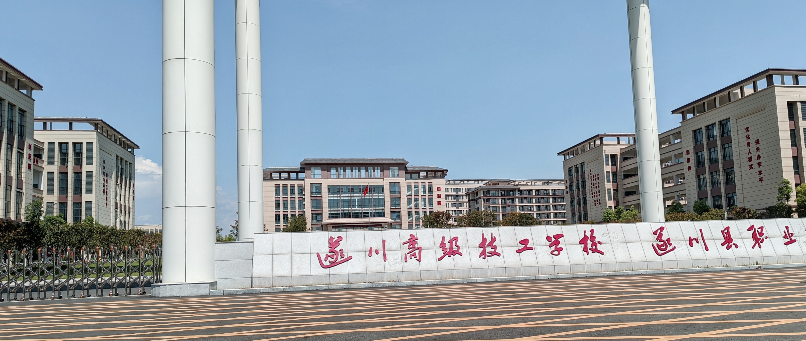

结构合理 · 素质优良 · 实训一线有真功夫
职称 · 学历 · 双师维度全景呈现
注：条形长度按各维度相对比例示意 · 数据以学校官方发布为准
上得了讲台 · 下得了车间
专业教师 40% 来自企业技术骨干与行业专家，把企业真实工艺、真实标准、真实项目带进课堂，实训一线见真章。
"双师型"教师既有扎实专业理论功底，又具备一线岗位实操能力，学生在校即可按企业标准完成真实生产任务。
教师在省"振兴杯"等行业赛事中屡获职工组第一，竞赛成果反哺教学，师生同台竞技、共同成长。
与奥海科技、志博信科技、狗牯脑茶叶集团等企业共建教学团队，产业导师进课堂，课程内容与岗位需求无缝衔接。
师德为先 · 技能为要 · 梯队成长
坚持把师德师风作为教师队伍建设第一标准，弘扬工匠精神与教育家精神，营造风清气正的育人环境。
已形成高级 2 人、中级 15 人、初级 50 人的双师型教师梯队，通过企业实践、技能研修持续提升执教水平。
组织专业教师赴合作企业跟岗实践，紧跟产业技术迭代，确保课堂所教即岗位所用。
双师领航 · 企业技术骨干执鞭实训一线
校址：江西省吉安市遂川县高铁新区职校路 6 号（高铁站东侧） · 工作日 8:30-11:30 / 14:30-17:30